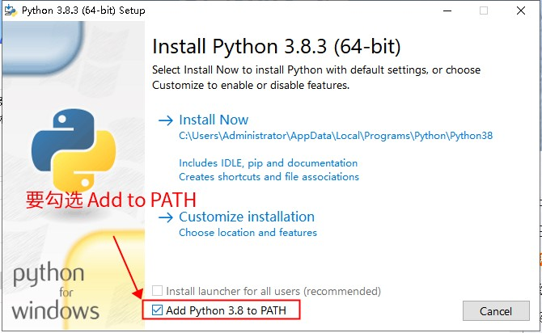
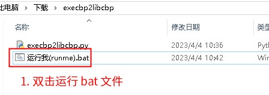
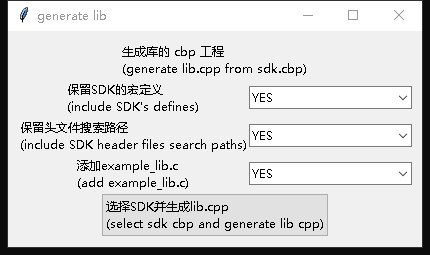
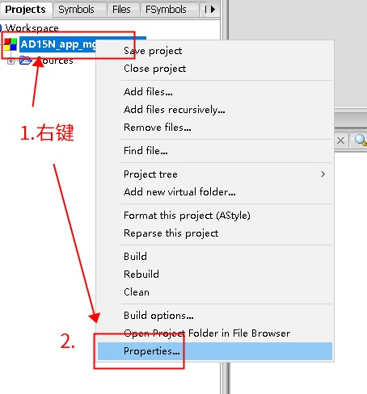
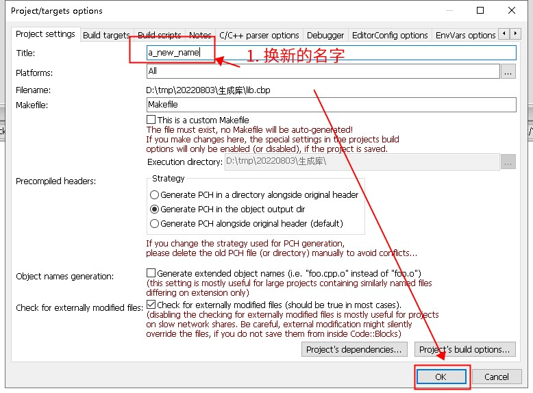

7.2. How to Get a Library Project from an Existing Standard SDK Project
Note
This page was missing from the saved files and was restored from an Internet Archive snapshot (2026-08-24); it may differ slightly from the current online version.
Normally, an SDK has only a Code::Blocks project that generates the final executable, but no corresponding library project (that is, a project that generates a static library .a).
In this case, you can obtain one by conversion with the tool below. The tool copies the configuration of the SDK project (including the compiler flags, etc.) and then generates a static library project.
The conversion steps are as follows:
Download and install python3 (click here to download). If python3 is already installed, skip this step. Make sure to check the option that adds python to the PATH environment variable:

Download the conversion tool (click here to download) and extract it to a new empty directory, as shown below:

Double-click the
运行我(runme).batbatch file to convert. The tool window is shown below. Select the options you need, then click the button at the bottom to select the SDK's cbp project file; a cbp project file for building the library is generated.

Note
If you select the [Keep header search paths] (保留头文件搜索路径) option, put the library's cbp project and the SDK's cbp project in the same directory to avoid inconsistent search paths.
Important
Different SDKs may use different compiler flags. If you need to build the library for several SDKs, generate a separate library project for each of them.
7.2.1. How to rename the library project
Open
lib.cbpand right-click the project as shown below

Enter the new name in the
Titlefield and save

7.2.2. How to generate VSCode and Makefile projects
Once you have the lib.cbp file of the Code::Blocks project, you can follow How to Convert a Code::Blocks Project to a make/VSCode Project to generate VSCode and Makefile projects from it.